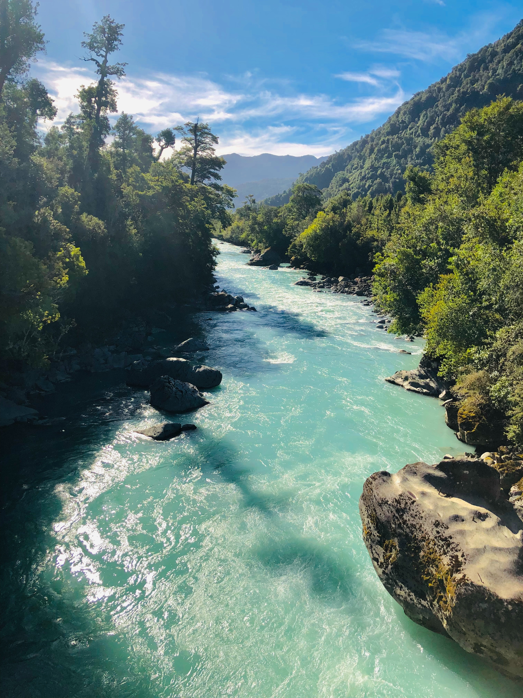
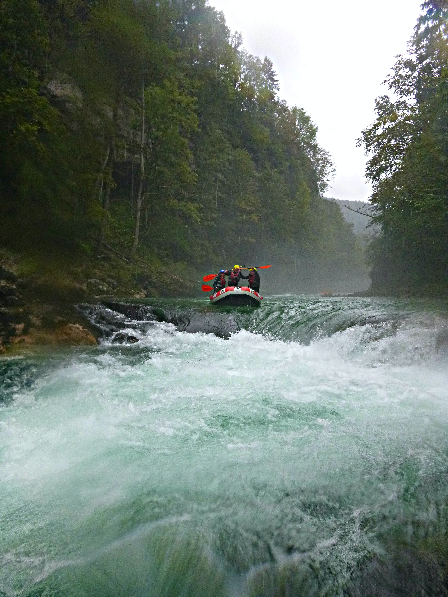

Rivers
Smooth Cruise River
If you want to enjoy the scenery, have a easy ride, then Smooth Cruise River is what your looking for. This river is great for families of all ages, the river is a real relaxing experience, great to camp by and spend that quality time families are looking for.

Baby Wild River
This river is for those looking to get their feet wet, Baby Wild has its challenges but is great for those looking for a fun ride. The views are awesome and camping is available by the river. Beginners, novices and experts will love this river.

Wild Ride River
Oh boy, this river is one wild ride, it has ups, downs and all arounds. This river is for those looking for a challenge, it has awesome views but we are sure you’ll be busy dealing with the rapids, they are many and very often. This river is for experienced white-water rafters, not the faint of heart. We know you’ll enjoy this rush; we mean ride….
Camping
The site is along the banks of the Wild Ride River, just off a paved road, and best of all, overnight dry camping (there are no hookups available) is free!. Pitch a tent or camp under the stars on your next getaway to Rivers are Awesome Park. What better way to get in touch with the natural beauty of the park than to camp out surrounded by exceptional wildlife, inspiring mountain ranges and sprawling meadows.
No electricity is available or public restrooms (just as mother nature intended) and the only running water is the river you'll be camping next to. Firepits are in place for public use at each campsite and river posts to tie-down your rafts. We do ask what ever you bring in, you bring out, let’s do our part to care for the earth and respect others who will camp after you.
Have a safe and enjoyable ride on the rivers at Rivers are Awesome Park.
Rapids

The rapids are a fun adventure to experience; however, we suggest you take care and prepare properly for any situation you may encounter before you embark on your epic ride.

We suggest bringing safety equipment like, safety vests, helmets, first-aid kits, prepackaged food/water, and always let someone know where you’ll be rafting or camping who isn’t going on your epic adventure. These are just a few of our suggestions to get you started.
We offer guides and rafts of every size for which ever epic adventure your going on, if you’d like a guide for any of the Rivers at the Rivers are Awesome Park, please plan ahead and schedule one at least 48 hours before you plan to arrive at the park.
Contact Us
Monday
8:00 AM - 8:00 PM
Tuesday
8:00 AM - 8:00 PM
Wednesday
8:00 AM - 8:00 PM
Thursday
8:00 AM - 8:00 PM
Friday
8:00 AM - 8:00 PM
Saturday
Closed
Sunday
Closed
Phone: (801) 555-5555
Email: SkiTheRapids@gmail.com